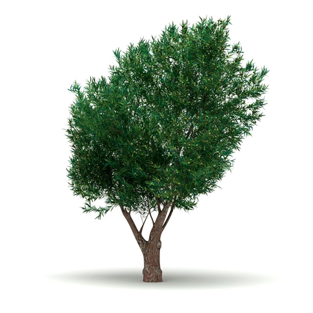
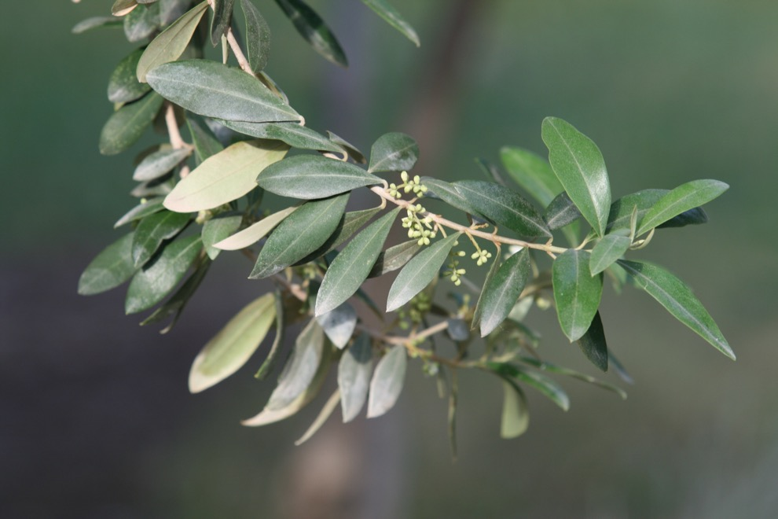
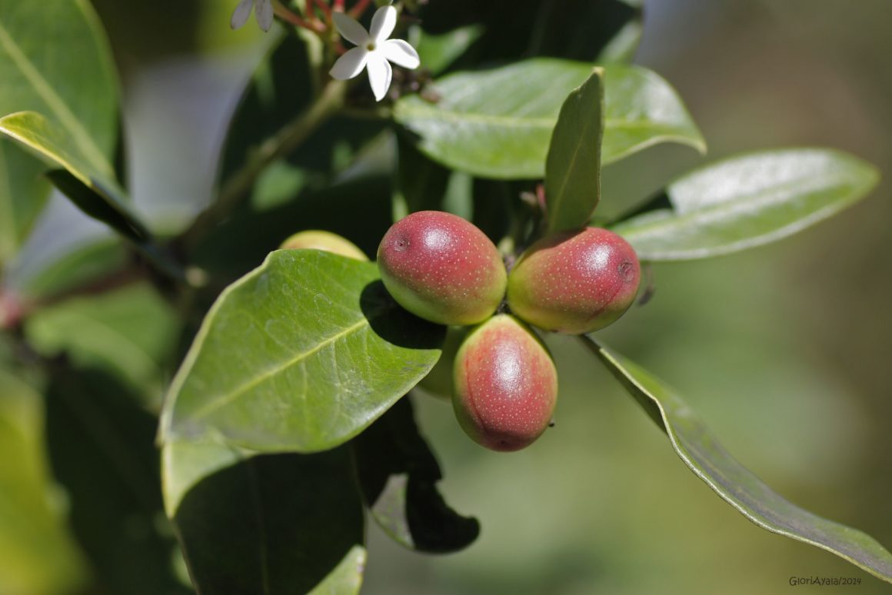
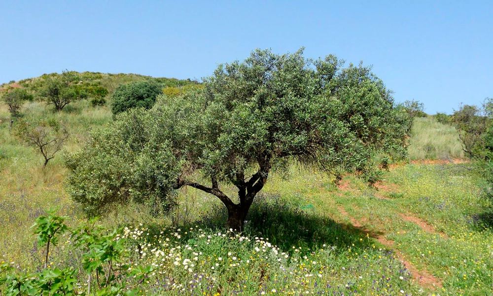

The wild olive tree is the wild form of the cultivated olive tree. It is a native species of the Mediterranean, widely distributed in regions with warm and dry climates.
Historically, this plant has been used both in oil production and in the reforestation of difficult-to-access areas due to its resistance.

Wild Olive Tree
Characteristics of the wild olive tree
Size and shape
Reaches between 2 and 8 meters in height.
Dense and irregular crown.
Leaves
Evergreen.
Lance-shaped.
Dark green on the top and grayish on the underside.

Green leaf of the wild olive tree
Fruit
Small olives that turn black when ripe.
Very bitter and not consumed directly.

Black fruit of the wild olive tree
Bark
Light gray and rough, characteristic of older specimens.
Distribution and habitat
The wild olive tree is mainly found in Mediterranean areas, where it can tolerate poor and dry soils. It is common in the coastal region of Spain, especially in Andalusia, although it is also found in other warm-climate areas of Europe, Asia Minor, and North Africa.
Its preferred habitat includes hills, rocky slopes, and dehesa areas.

Habitat of the wild olive tree
Number of Wild Olive Trees in Spain
Number of Wild Olive Trees in Spain
Autonomous Community
Estimated Number of Wild Olive Trees
Comments
Andalusia
>1 Million
Predominant in coastal areas, Sierra Morena, Doñana, and the Guadalquivir Valley.
What differentiates the traditional olive tree from the wild olive tree?
The olives of the wild olive tree are more bitter and have a lower oil content compared to those of the cultivated olive tree.
The wild olive tree is more resistant to extreme conditions such as droughts and poor soils, whereas the olive tree has adapted to perform better in optimal cultivation conditions.
The wild olive tree maintains greater genetic diversity, making it key in olive tree breeding and conservation programs.
The wild olive tree tends to have a longer lifespan than cultivated olive trees, with some specimens reaching centuries old.
Uses and applications
The wild olive tree has various traditional and modern uses:
Oil production: Although the oil from the wild olive tree is of lower quality than that of the cultivated olive tree, it is used in the production of more rustic and authentic oils.
Reforestation and conservation: Due to its resistance, it is used in projects to restore eroded soils and reforestation in arid areas.
Genetic conservation: It is used in genetic improvement programs to create more resistant and adapted olive varieties to extreme conditions.
Ecological importance
The wild olive tree is a key plant in Mediterranean ecosystems, serving as a refuge for various fauna species and contributing to soil stability. Its resistance to droughts makes it a crucial ally in the face of climate change, allowing some areas to be less vulnerable to desertification.